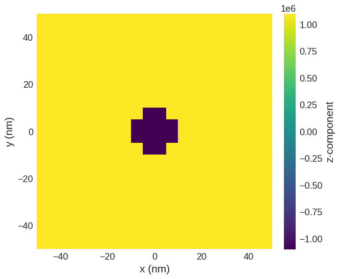
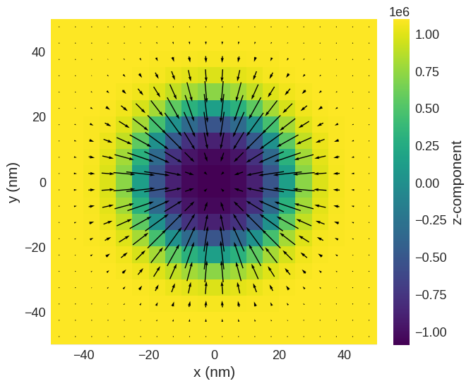
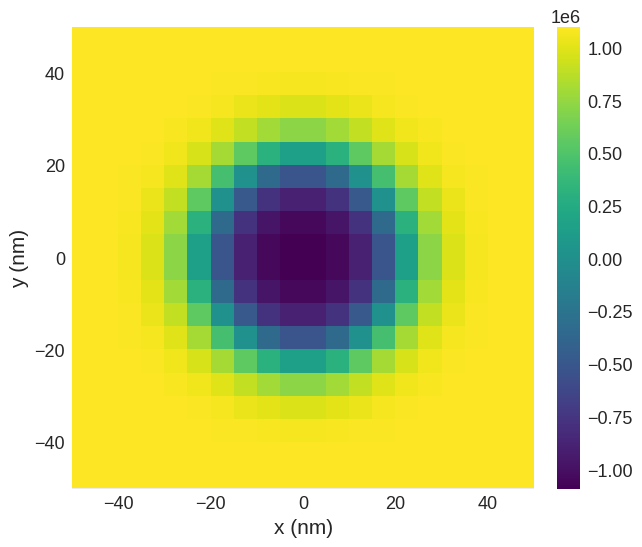

Periodic boundary conditions#
In this tutorial, we compute and relax a skyrmion in an interfacial-DMI (Cnv) material in a part of an infinitely large thin film.
[1]:
import oommfc as mc
import discretisedfield as df
import micromagneticmodel as mm
We define mesh in cuboid through corner points p1 and p2, and discretisation cell size cell.
[2]:
region = df.Region(p1=(-50e-9, -50e-9, 0), p2=(50e-9, 50e-9, 10e-9))
mesh = df.Mesh(region=region, cell=(5e-9, 5e-9, 5e-9), bc='xy')
The mesh we defined is:
[3]:
mesh.k3d()
Now, we can define the system object by first setting up the Hamiltonian:
[4]:
system = mm.System(name='skyrmion')
system.energy = (mm.Exchange(A=1.6e-11)
+ mm.DMI(D=4e-3, crystalclass='Cnv_z')
+ mm.UniaxialAnisotropy(K=0.2e6, u=(0, 0, 1))
+ mm.Zeeman(H=(0, 0, 1e5)))
system.energy
[4]:
$- A \mathbf{m} \cdot \nabla^{2} \mathbf{m}+ D ( \mathbf{m} \cdot \nabla m_{z} - m_{z} \nabla \cdot \mathbf{m} )-K (\mathbf{m} \cdot \mathbf{u})^{2}-\mu_{0}M_\text{s} \mathbf{m} \cdot \mathbf{H}$
Now, we need to define a function to define the initial magnetisation which is going to relax to skyrmion.
[5]:
def m_init(pos):
"""Function to set initial magnetisation direction:
-z inside cylinder (r=10nm),
+z outside cylinder.
y-component to break symmetry.
"""
x, y, z = pos
if (x**2 + y**2)**0.5 < 10e-9:
return (0, 0, -1)
else:
return (0, 0, 1)
system.m = df.Field(mesh, dim=3, value=m_init, norm=1.1e6)
The initial magnetsation is:
[6]:
system.m.plane('z').mpl()
/opt/miniconda3/envs/ubermagdev/lib/python3.8/site-packages/matplotlib/quiver.py:689: RuntimeWarning: divide by zero encountered in double_scalars
length = a * (widthu_per_lenu / (self.scale * self.width))
/opt/miniconda3/envs/ubermagdev/lib/python3.8/site-packages/matplotlib/quiver.py:689: RuntimeWarning: invalid value encountered in multiply
length = a * (widthu_per_lenu / (self.scale * self.width))

Finally we can minimise the energy and plot the magnetisation.
[7]:
# minimize the energy
md = mc.MinDriver()
md.drive(system)
# Plot relaxed configuration: vectors in z-plane
system.m.plane('z').mpl()
Running OOMMF (ExeOOMMFRunner)[2022/02/25 18:37]... (0.5 s)

[8]:
# Plot z-component only:
system.m.z.plane('z').mpl()

[9]:
# 3d-plot of z-component
system.m.z.k3d.scalar()
Finally we can sample and plot the magnetisation along the line:
[10]:
system.m.z.line(p1=(-49e-9, 0, 0), p2=(49e-9, 0, 0), n=20).mpl()

Finally let us compute the skyrmion number
\[S = \frac{1}{4\pi}\int\mathbf{m}\cdot\left(\frac{\partial \mathbf{m}}{\partial x} \times \frac{\partial \mathbf{m}}{\partial y}\right)dxdy\]
[11]:
m = system.m.orientation.plane('z')
[12]:
df.integral(m @ (m.derivative('x') & m.derivative('y')) * df.dx*df.dy) / 4 / 3.14
[12]:
-0.9249451991543435
[13]:
import math
m = system.m.orientation.plane('z')
1/(4*math.pi) * df.integral(m @ (m.derivative('x') & m.derivative('y')) *df.dx*df.dy)
[13]:
-0.9244762913568568
[14]:
import discretisedfield.tools as dft
dft.topological_charge(system.m.plane('z'))
[14]:
-0.9244762913568569
[15]:
dft.topological_charge(system.m.plane('z'), method='berg-luescher')
[15]:
-0.9997455664839123